МИНИСТЕРСТВО
МОНТАЖНЫХ И СПЕЦИАЛЬНЫХ
СТРОИТЕЛЬНЫХ
РАБОТ СССР
ИНСТРУКЦИЯ
ПО СОСТАВАМ, ТЕХНОЛОГИИ ИЗГОТОВЛЕНИЯ
И
УКЛАДКИ КИСЛОТОУПОРНЫХ ТОРКРЕТ-ШТУКАТУРОК
ВСН 421-81
ММСС СССР
Москва 1980
Инструкция разработана ВНИПИТеплопроектом Главтепломонтажа Минмонтажспецстроя СССР на основании теоретических и экспериментальных исследований, производственного опыта внедрения кислотоупорных торкрет-смесей СУ Черноморскжелезобетонстрой
Инструкция разработана кандидатами технических наук Б. Д. Тринкером, А. С. Денисовым, Т. М. Самохиной, инженером Л. Г. Липатовой.
|
МИНМОНТАЖСПЕЦСТРОЙ СССР |
ВЕДОМСТВЕННЫЕ СТРОИТЕЛЬНЫЕ НОРМЫ |
ВСН 421-81 ММСС СССР |
|
Инструкция по составам, технологии изготовления и укладки кислотоупорных торкрет-штукатурок |
ВЗАМЕН |
1.1. Настоящей инструкцией следует руководствоваться при нанесении кислотоупорных торкрет-смесей на внутренние поверхности дымовых труб и газоходов ТЭЦ, ГРЭС и других предприятий, котельные которых работают на сернистом топливе с температурой отходящих газов от 60 до 250 °C, и вентиляционных труб, работающих при температуре 20-60 °C в условиях воздействия кислых агрессивных газов и их конденсата, за исключением плавиковой, кремнефтористоводородной и горячей фосфорной кислот, а также щелочей.
1.2. Инструкция предусматривает применение кислотоупорных торкрет-смесей на основе калиевого или натриевого жидкого стекла, а также тонкомолотого силиката калия.
Торкрет-смеси на основе натриевого жидкого стекла необходимо наносить на поверхности строительных конструкций, эксплуатирующихся в условиях воздействия сернистых окислов сери при температуре не ниже 40 °С.
1.3. Покрытия на калиевом жидком стекле и тонкомолотой калиевой силикат-глыбе имеют высокую стойкость к конденсату серной и сернистой кислот и к газообразным окислам серы (SO3 и SO2), содержащимся в удаляемых дымовых газах, обладают достаточной водостойкостью, плотностью и хорошей адгезией к защищаемой поверхности.
1.4. Кислотоупорные торкрет-смеси могут быть нанесены на защищаемую поверхность строительных конструкций путем полусухого торкретирования или набрызга.
|
ВНЕСЕНЫ |
УТВЕРЖДЕНЫ |
СРОК ВВЕДЕНИЯ |
2.1. В качестве вяжущего при приготовлении кислотостойких торкрет-растворов следует использовать жидкое калиевое и натриевое стекло (ТУ 6-15-785-73 или ТУ 6-18-204-74, ГОСТ 13078-67) с кремнеземистым модулем в пределах 2,8-3,1 или тонкомолотую калиевую силикат-глыбу (ОСТ 21-3-74) с модулем около 3 и удельной поверхностью 3500-4000 см2/г.
Допускается использовать молотую силикат-глыбу с удельной поверхностью, не менее 2000 см2/г при условии оснащения применяемого торкрет-аппарата струйным активатором (авт. свид. № 376539, бюл. № 17, 1973 г.).
2.2. В качестве инициатора твердения в кислотоупорных торкрет-растворах на основе жидкого стекла следует использовать кремнефтористый натрий (ГОСТ 87-77), характеризуемый проходом через сетку 008 не менее 90 % по массе.
2.3. В качестве тонкомолотого наполнителя следует использовать: порошки кислотоупорные ПК-1 и ПК-2 (ТУ 21 РСФСР 695-76), андезитовую муку (ТУ 6-12-101-77), кварцевый порошок (ГОСТ 9077-59) или другие, имеющие кислотостойкость не ниже 95 %. Гранулометрический состав тонкомолотого наполнителя должен соответствовать данным, приведенным в табл. 1.
Таблица 1
|
Сито, отв./см2 |
Остаток не более, % |
|
|
02 |
918 |
05 |
|
008 |
5476 |
10 |
|
0056 |
10085 |
30 |
2.4. В качестве заполнителя применяется чистый кварцевый песок (ГОСТ 8736-77), наибольшая крупность зерен которого определяется характеристиками оборудования, используемого для подачи торкрет-смеси или раствора. Кислотостойкость заполнителя должна быть не ниже 95 %.
Для приготовления торкрет-раствора на основе жидкого стекла может быть использован заполнитель с влажностью до 6 % по массе. Влажность заполнителя, используемого для приготовления торкрет-раствора на основе тонкомолотой силикат-глыбы, не должна превышать 0,5 % по массе.
2.5. Для повышения водостойкости и плотности кислотоупорного торкрет-раствора в его состав следует вводить каменноугольный пек (ГОСТ 1030-75), смолу инден-кумароновую ИКС (ГОСТ 9263-66), парафин (ГОСТ 16960-71) (приложение 1) или ацетоноформальдегидную смолу АЦФ (ТУ 6-05-221-122-78). Вид гидрофобного термопластичного материала (пек, ИКС, парафин) выбирается в соответствии с температурными условиями эксплуатации защищаемой конструкции, причем температура его плавления должна быть на 10-15 °С ниже температуры удаляемых газов (см. приложение 1).
Каменноугольный пек или инден-кумароновая смола вводится в состав торкрет-раствора в виде порошка, проходящего через сито 0,14 мм. Парафин вводится в виде эмульсии в соответствии с «Инструкцией по приготовлению и применению строительных растворов» СН 290-74 и приложением 2.
Ацетоноформальдегидная смола вводится в виде 50 % водного раствора.
2.6. Для облегчения нанесения торкрет-раствора и повышения прочности, трещиностойкости и коррозионной стойкости в его состав следует вводить хризотиловый асбест 5 или 6 сорта (ГОСТ 12871-67).
2.7. Для увлажнения сухих торкрет-смесей на основе тонко-молотой силикат-глыбы, а также разведения жидкого стекла, смолы АЦФ и приготовления парафиновой эмульсии следует использовать воду, отвечающую требованиям ГОСТ 23732-79 «Вода для бетонов и растворов. Технические условия».
2.8. Жидкое стекло следует хранить в герметичной таре при температуре выше точки его замерзания, т. к. даже кратковременное замораживание жидкого стёкла, существенно ухудшает его вяжущие свойства.
2.9. Тонкомолотую силикат-глыбу следует хранить в упаковке, предотвращающей ее увлажнение (полиэтиленовые мешки, металлические емкости).
2.10. Кремнефтористый натрий следует хранить в упаковочной таре с плотной крышкой. Не допускается, его хранение навалом в бумажной упаковке.
2.11. Наполнители и заполнители, а также уплотняющие добавки следует хранить в бункерах, ларях или другой плотно закрывающейся таре, предохраняющей материалы от загрязнения и увлажнения.
2.12. На ларях или других емкостях следует указывать наименование материалов.
3.1. Кислотоупорные торкрет-смеси должны, как правило, поставляться на строительную площадку в виде готовых сухих смесей, приготовление которых должно осуществляться в соответствии с требованиями настоящей Инструкции.
Допускается приготовление торкрет-смесей на строительной площадке из заранее подготовленных основных компонентов.
3.2. Подготовка жидкого стекла заключается в разведении товарного жидкого стекла водой до плотности 1,25 ± 0,05 г/см3 и (в случае использования в качестве уплотняющих добавок парафина или АЦФ) смешивании его с расчетным количеством 50 % водного раствора АЦФ, или парафиновой эмульсии.
3.3. Калиевая силикат-глыба перед использованием должна быть подвергнута дроблению до наибольшей крупности зерен 2-3 мм и последующему помолу в вибромельницах (шаровых мельницах) совместно с инден-кумароновой смолой или каменноугольным пеком.
3.4. Допускается производить помол инден-кумароновой смолы или каменноугольного пека совместно с равным по массе количеством кислотоупорного наполнителя.
3.5. Используемый в составе кислотоупорной торкрет-смеси на основе тонкомолотой силикат-глыбы кварцевый песок следует высушить до влажности не более 0,5 % по массе.
3.6. Помол твердых инициаторов твердения торкрет-смесей на основе тонкомолотой силикат-глыбы и гидрофобных термопластичных материалов следует производить совместно с силикат-глыбой.
Помол инициатора твердения торкрет-смеси на основе жидкого стекла следует производить совместно с равным ему по массе количеством кварцевого песка.
3.7. Асбест перед введением остальных компонентов должен быть предварительно распушен в растворомешалке в течение 5 минут.
3.8. В случае приготовления торкрет-смесей на жидком стекле с ацетоноформальдегидной смолой, последнюю сначала разводят равным по весу количеством воды, а затем расчетное количество полученного 50 % водного раствора вводят в жидкое стекло.
3.9. Подготовленные компоненты перед загрузкой в смеситель дозируются по массе. При этом точность дозировки для вяжущих и инициаторов твердения должна составлять ±1 %, для заполнителей ±3 %.
3.10. Для перемешивания компонентов следует применять смесители принудительного действия, обеспечивающие хорошее перемешивание при минимальном пылении, производительность которых должна соответствовать производительности торкрет-аппарата.
3.11. Соотношение основных компонентов должно соответствовать приведенному в табл. 2.
Таблица 2
|
Соотношение сухих компонентов в % по массе (числитель) и расход компонентов в кг/м раствора (знаменатель) |
||
|
Номер состава |
||
|
1 |
2 |
|
|
Тонкомолотая силикат-глыба |
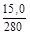 |
- |
|
Кремнефтористый натрий |
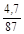 |
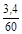 |
|
Тонкомолотый наполнитель |
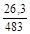 |
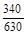 |
|
Кварцевый песок |
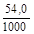 |
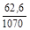 |
|
Жидкое стекло плотностью 1,25 + 0,05 г/см3 (сверх 100 %) |
- |
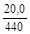 |
|
Вода (сверх 100 %) |
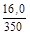 |
- |
3.12. Количество добавок, улучшающих свойства торкрет-смесей должно составлять (от массы остальных сухих компонентов): каменноугольный пек - до 1,5 %, инден-кумароновая смола - до 5 %, ацетоноформальдегидная смола - до 0,6 %, антофиллитовый асбест - до 5 %, парафиновая эмульсия - до 1,5 %. Пример определения и расчета состава кислотоупорной торкрет-штукатурки приведен в приложении 3.
3.13. Приведенные составы кислотостойких торкрет-штукатурок должны иметь предел прочности при сжатии от 15,0 до 250 МПа, коэффициент кислотостойкости 0,90-1,00, коэффициент водостойкости - 0,85-0,90, керосинопоглощение не более 8 %.
3.14. Указанные в табл. 2 составы обязательно должны уточняться путем испытания контрольных образцов из торкрет-смеси, изготовленных из имеющихся на строительной площадке материалов.
3.15. При приготовлении торкрет-смесей на основе тонкомолотой силикат-глыбы порядок загрузки компонентов в смеситель должен быть следующим: песок - кислотоупорный порошок - инициатор твердения - тонкомолотая силикат-глыба - гидрофобная добавка (пек или ИКС) - асбест. При введении в воду затворения парафиновой эмульсии или АЦФ-3 гидрофобный материал в смесь сухих компонентов не вводится.
3.16. При приготовлении торкрет-смеси на основе жидкого стекла порядок загрузки компонентов должен быть следующим: песок - кислотоупорный порошок - инициатор твердения - гидрофобная добавка (пек или ИКС) - асбест. В случае введения в жидкое стекло парафиновой эмульсии или АЦф-3 гидрофобная добавка в смесь сухих компонентов не вводится.
3.17. Влажность заранее приготовленных смесей, увлажняемых при нанесении жидким стеклом, не должна превышать 6 %.
3.18. Влажность заранее приготовленных смесей, включающих силикат-глыбу, не должна превышать 0,5 %. Смесь следует хранить в бумажных мешках в сухом состоянии. Срок хранения не более одного месяца.
При более длительном хранении, а также при слеживании или комковании торкрет-раствора его пригодность определяется путем испытании изготовленных из него контрольных образцов.
Перед нанесением торкрет-смеси на бетонную поверхность, с целью увеличения адгезии и нейтрализации выделившейся при твердении бетона гидроокиси кальция, последнюю следует обработать 10 %-ным горячим (температура 50-60 °С) раствором одной из следующих солей: кремнефтористого магния, углекислого или сернокислого магния, кислого углекислого аммония, фосфорнокислого аммония двузамещенного или щавелевой кислоты.
4.2. При проведении ремонтных работ поверхность старой кирпичной кладки очищается от загрязнений, производится удаление слабых и разрушенных участков футеровки и расчистка швов кладки, после чего осуществляется нейтрализация поверхности 10 %-ным раствором карбоната калия (поташ) и ее промывка струей воды под давлением.
4.3. Перед нанесением торкрет-смеси поверхность портланд-цементного бетона необходимо очистить от пыли и других загрязнений и затем обработать 2-3 раза 10 %-ным раствором соли, нейтрализующей гидрат окиси кальция (см. п. 4.1).
4.4. Металлические поверхности перед нанесением торкрет-смеси должны быть очищены от загрязнений и отслаивающейся ржавчины и промыты 15-20 % раствором жидкого стекла.
4.5. Непосредственно перед нанесением торкрет-смеси защищаемая поверхность должна быть смочена жидкостью, используемой для увлажнения сухой торкрет-смеси (вода, в случае укладки торкрета на основе тонкомолотой силикат-глыбы, и жидкое стекло, в случае укладки торкрета на основе жидкого стекла).
Допускается нанесение торкрет-смеси по подслою из предварительно нанесенного на защищаемую поверхность полимерного материала согласно «Инструкции по противокоррозионной защите и ремонту полимерными материалами дымовых промышленных труб и других специальных высотных железобетонных сооружений» ВСН 344-75, имеющего хорошую прочность сцепления как с защищаемой поверхностью, так и со свеженанесенным торкретом. При этом, нанесение торкрет-штукатурного слоя должно производиться в промежуток времени, когда полимерный подслой находится в состоянии отлипа, который при использовании эпоксидных смол может быть от 3 до 24 ч, в зависимости от вида используемого отвердителя или ускорителей твердения и температуры окружающей среды. Состав подслоя и время, в течение которого должен наноситься штукатурный слой, указываются в проекте производства работ.
4.6. При температуре защищаемой поверхности ниже 10 °С, она должна быть прогрета, например путем устройства тепляков, до температуры 15°-20 °С.
5.1. Для полусухого торкретирования кислотоупорных смесей следует использовать цемент-пушки типа ЦПШК-1М, С-630А и др. (см. приложение 4), а для подачи увлажняющего жидкого стекла - передвижной пневматический бак БПП-150М, проект № 37559 (ВНИПИТеплопроект).
Для нанесения кислотоупорных смесей способом набрызга следует использовать штукатурные агрегаты (например передвижной штукатурный агрегат С-372А).
5.2. Перед нанесением торкрет-смесей на защищаемую поверхность подбирают оптимальный расход увлажняющей жидкости, нанося смесь на специальный щит. Количество жидкости, вводимой в торкрет-смесь в процессе торкретирования, определяют визуально, по моменту начала образования глянцевой пленки на поверхности нанесенного слоя. Смесь требуемой консистенции, нанесенная на поверхность, должна блестеть. При снижении расхода жидкого стекла или воды ниже оптимального происходит сильное пыление и увеличение отскока. При увеличении содержания жидкого стекла больше оптимального, смесь сползает с поверхности.
5.3. Для предотвращения забивки отверстий увлажнителя сопла в заливочную горловину и на выпускной патрубок бака для увлажняющий жидкости следует устанавливать сеточный фильтр с размером отверстий 0,63 мм.
5.4. Для получения более ровной поверхности торкрет-слоя и предотвращения забивки сопла торкрет-аппарата налипающей на его внутренним стенки торкрет-штукатурки, изготовленной на основе жидкого стёкла, следует использовать сопло конструкции ВНИПИТеплопроекта (проект КБ-352).
5.5. В холодное время года для снижения вязкости жидкого стекла его следует подогревать до температуры 40-50 °С.
5.6. При необходимости проведения торкрет-работ на большой высоте (до 100 м) с использованием торкрет-аппарата, стоящего на земле, подачу сухой торкрет-смеси и увлажняющей жидкости к соплу следует осуществлять по стальным стоякам с внутренним диаметром, равным диаметрам соответствующих резиновых шлангов.
5.7. Нанесение торкрет-смесей способом полусухого торкретирования должно производиться сразу на проектную толщину (30-40 мм) с использованием маяков, заранее закрепленных на защищаемой поверхности и удаляемых по мере заполнения промежутков между ними торкрет-штукатуркой. При использовании способа набрызга торкрет-смесь наносится несколькими слоями толщиной 0,5-1 см каждый.
5.8. Наносить торкрет-смесь на поверхность следует круговыми движениями сопла.
5.9. Торкретирование необходимо производить по следующему режиму:
давление жидкого стекла, МПа - 0,5
давление воды, МПа - 0,35
давление воздуха на входе в торкрет-аппарат, МПа - 0,15-0,2
При увеличении расстояния от торкрета-аппарата до места производства работ на каждые 10 м по вертикали и 50 м по горизонтали давление воздуха увеличивается на 0,06-0,07 МПа, давлению жидкого стекла - на 0,15 МПа и давление воды - на 0,11 МПа.
5.10. Выравнивание поверхности нанесенного торкрет-слоя следует производить сразу после окончания его укладки.
5.11. Толщину нанесенного слоя контролируют путем его прокалывания проволокой диаметром 1-1,5 мм, места проколов должны быть сразу уплотнены.
5.12. При выполнении ремонтных работ толщина нанесенной торкрет-штукатурки должна быть больше толщины существующего слоя на 10-15 мм.
5.13. В случае перерывов в работе при торкретировании края свеженанесенного слоя необходимо срезать перпендикулярно к защищаемой поверхности.
5.14. Твердение нанесенного торкрет-слоя должно происходить в воздушно-сухих условиях при температуре не ниже 10°-15 °С. При температуре 15°-20 °С продолжительность твердения должна составлять не менее 10 суток.
5.15. При температуре окружающего воздуха ниже +10 °С следует производить обогрев торкрет-штукатурки горячим воздухом или электрообогревательными приборами при температуре 45-50 °С и скорости подъема температуры не более 15 °С в ч. Продолжительность твердения или сушки устанавливается лабораторией.
5.16. После окончания твердения и сушки торкрет-штукатурку, следует прогреть до температуры, на 10-15 °С превышающей температуру плавления использованного в ее составе гидрофобного материала. Допускается производить окончательный прогрев параллельно с выводом обслуживаемого трубой теплового агрегата на рабочий режим.
5.17. После окончания сушки торкрет-штукатурки следует произвести осмотр ее поверхности.
5.18. Обнаруженные при осмотре дефектные участки торкрет-штукатурки должны быть удалены до защищаемой поверхности и заполнены штукатуркой такого же состава.
5.19. Ремонт отдельных участков торкрет-штукатурки может быть произведен как способом торкретирования, так и вручную.
5.20. Повторная сушка отремонтированной торкрет-штукатурки производится в том случае, если суммарная площадь отремонтированных участков составляет на менее 20 % от общей площади защитного слоя.
5.21. Для повышения плотности торкрет-штукатурки ее поверхность следует обработать материалом, заполняющим открытые поры. Для торкрет-штукатурки, эксплуатируемой при температуре до 80 °С, в качестве такого материала следует применять парафиновую эмульсию, наносимую на поверхность штукатурки слом 2-3 мм. В случае более высокой температуры эксплуатации уплотнение поверхности штукатурки достигается путем ее пропитки жидким стеклом.
6.1. При производстве работ по нанесению кислотоупорных торкрет-штукатурок необходимо контролировать:
качество исходных материалов и условия их хранения;
качество подготовки поверхности;
правильность приготовления сухих смесей;
соотношение компонентов торкрет-смесей;
технологию нанесения торкрет-смесей;
качество нанесенного покрытия;
условия твердения (режим сушки);
прочность торкрет-штукатурки;
температурные условия при нанесении торкрет-смеси и режим сушки.
6.2. Качество нанесения торкрет-штукатурки и ее сцепления с защищаемой поверхностью следует определять визуальным осмотром и ее простукиванием после окончания твердения.
6.3. Торкрет-штукатурка не должна иметь усадочных трещин, вздутий и отслаиваний, определяемых по глухому дребезжащему звуку при простукивании легким молотком массой 150-200 г.
6.4. Выявленные при осмотре и простукивании дефектные участки торкрет-штукатурки должны быть вырублены до защищаемой поверхности, очищены и снова заторкретированы.
6.5. При приемке работ должны быть предъявлены акты на скрытые работы, акты на испытания примененных материалов, журнал производства работ (см. приложения к СНиП III-23-76).
7.1. При производстве работ следует руководствоваться СНиП III-4-80 «Техника безопасности в строительстве», а также требованиями настоящей Инструкции.
7.2. Все работы по подводке электроэнергии, перемещению электрооборудования должен выполнять электромонтер, знакомый с правилами техники безопасности при монтаже, эксплуатации, ремонте и демонтаже электрооборудования. При этом следует руководствоваться СНиП III-4-80 по «Технике безопасности в строительстве».
7.3. Находящееся под напряжением оборудование должно быть заземлено.
7.4. Освещение должно быть выполнено в соответствии с требованиями ППР.
7.5. На рабочем месте должны быть вывешены инструкции и плакаты по технике безопасности.
7.6. Постоянные и передвижные подмости, с которых производят торкретирование, должны быть прочными, иметь сплошной дощатый настил, ограждения и лестницы с перилами.
7.7. Для защиты от пыли при измельчении и просеивании силикат-глыбы, кремнефтористого натрия, каменноугольного пека и кислотостойких тонкомолотых наполнителей рабочие должны быть обеспечены пыленепроницаемыми костюмами, респираторами, защитными очками и рукавицами.
7.8. Смешивание кремнефтористого натрия с тонкомолотыми наполнителями и заполнителями следует производить только в закрытых смесителях.
7.9. Работы с пеком не должны производиться при солнечном свете, увеличивающем токсические свойства пека.
7.10. Работы по обработке пека должны быть максимально механизированы, оборудование должно быть герметизировано.
7.11. Предельная концентрация пыли и паров пека в воздухе рабочих помещений не должна превышать 0,05 мг/м2.
7.12. Кожный покров и слизистые оболочки рабочих, занятых обработкой пека и работами с составами, содержащими пек, должны быть защищены от соприкосновения с пылью или парами пека.
7.13. Все лица, занятые в торкретировании, должны быть ознакомлены c правилами производства работ, хорошо изучить правила эксплуатации оборудования, пройти инструктаж, сдать техминимум и получить удостоверение.
7.14. Цемент-пушка и прямоточный растворонасос должны иметь паспорта. В паспортах должны быть отражены результаты контрольной опрессовки рабочей камеры, коробки, нагнетательного клапана и смесительной камеры.
Контрольную опрессовку указанного оборудования необходимо производить раз в 6 месяцев с составлением актов, которые хранят у главного механика стройуправления и на строительной площадке вместе с паспортом и прочей технической документацией.
7.15. Аппараты, работающие под давлением, должны иметь исправные манометры и предохранительные клапаны.
7.16. Шланги в местах присоединений необходимо крепить хомутами на болтах и располагать в соответствии с требованиями ППР.
7.17. Производить работы на неисправной установке, а также исправлять дефекты во время ее работы запрещается. Устранять неисправности в рабочей камере, клапанной коробке, нагнетательном клапане, смесительной камере, материальном шланге, воздушных шлангах и сопле можно только после прекращения подачи воздуха в смесительную камеру и полного сброса имеющегося избыточного давления на всем участке пути от всасывающего клапана до сопла, в достоверности чего моторист должен убедиться лично.
7.18. Размещение оборудования внутри ствола трубы или градирни и освещение рабочего места должны соответствовать ППР.
7.19. Все работы по подъему и креплению люлек, подмостей или площадок необходимо выполнять в соответствии с требованиями ППР.
7.20. Между рабочими, занятыми обслуживанием компрессора и рабочими, обслуживающими цемент-пушку или растворонасос, должна быть установлена телефонная связь, световая или звуковая сигнализация.
7.21. При остановке цемент-пушки сопловщик во избежание затекания воды в материальный шланг должен держать сопло наконечником вниз.
7.22. Перед очисткой сжатым воздухом шланги должны быть отведены в сторону от людей и надежно закреплены.
7.23. Предохранительный клапан у растворонасоса должен быть отрегулирован по манометру на максимальное избыточное давление в каморе промежуточной жидкости 1,2 МПа.
7.24. Перед началом работы на новом объекте растворонасос и материальный шланг должны быть спрессованы при избыточном давлении 1,2 МПа.
7.25. Нанометры первой ступени сжатия компрессора обязательно должны быть исправными, поскольку растворонасос при этой схеме использования не имеет манометра, а давление, возникающее в смесительной камере, определяют в ресивере компрессора по манометру второй ступени.
7.26. Шланга в местах присоединения необходимо крепить на болтах специальными фланцево-клиновыми соединениями, поставляемыми заводом-изготовителем растворонасоса или же изготовляемыми на месте по образцу. Размеры деталей фланцевого соединения должны соответствовать диаметру и толщине стенок шлангов.
7.27. Пригодность шлангов и их соединений следует определять путем их испытания давлением, превосходящим рабочее на 0,2 МПа.
Температура размягчения инден-кумароновых смол
|
Тип смолы (ГОСТ 9263-66) |
А |
Б |
В |
Г |
Д |
Е |
Ж |
|
Температура размягчения, °С, не ниже |
140 |
120 |
105 |
90 |
80 |
70 |
60 |
Температура размягчения каменноугольного пека
|
Тип пека (ГОСТ 1038-75) |
Среднетемпературный |
Высокотемпературный |
|
|
А |
Б |
||
|
Температура размягчения, °С |
67-75 |
76-83 |
135-150 |
Температура плавления парафина
|
Марка (ГОСТ 16960-71) |
В1 |
В2 |
В3 |
В4 |
Т |
С |
Нс |
Ив |
|
Температура плавления, °С |
50-52 |
52-54 |
54-56 |
56-58 |
более 50 |
45-52 |
42-50 |
57-64 |
Порядок приготовления жидкостекольно-парафиновой композиции следующий:
составляют смесь из 6-8 частей па массе парафина, 1 части по массе эмульгатора (мыла) и такого количества воды, которое необходимо для полного растворения эмульгатора (обычно 3-5 частей по массе).
Смесь расплавляют и кипятят до получения однородной пасты. Расслоение пасты не допускается.
Полученную, пасту вводят в заранее, отмеренное количество жидкого стекла из расчета требуемого содержания парафина в жидкостекольно-парафиновой композиции и размешивают в мешалке.
Условие: требуется определить соотношение компонентов кислотоупорной торкрет-смеси на основе тонкомолотой силикат-глыбы для рабочий температуры 130 °С в случае введения в состав 5 % инден-кумароновой смолы (ИКС) и 2 % асбеста.
По ГОСТ 9263-66 определяем, что при заданной эксплуатационной температуре следует использовать смолу типа. «Б» (температура размягчения 120 °С).
Принимаем объемную массу свежеуложенной торкрет-штукатурки равной 2200 кг/м3. Масса сухих компонентов при содержании воды 16 % составит 2200-2200·0,16 = 1848 кг.
Общее число процентов по массе с учетом введения 5 % ИКС и 2 % асбеста, составит 100 + 5 + 2 = 107.
В соответствии с табл. 2 (состав 1) определяем расход компонентов и кг/м3 раствора:
расход тонкомолотой силикат-глыбы
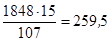
расход кремнефтористого натрия
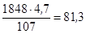
расход тонкомолотого наполнителя
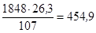
расход кварцевого песка
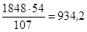
расход инден-кумароновой смолы
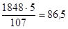
расход асбеста
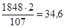
Сумма расходов материалов:
259,5 + 81,3 + 454,9 + 934,2 + 86,5 + 34,6 = 1851 кг
Погрешность расчетов, вызванная округлениями, составляет
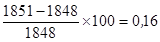
и может не приниматься во внимание, так как она значительно меньше точности дозировки материалов (+3 %).
|
Наименование и марка установки |
Максимальная крупность зерен, мм |
Производительность по сухой смеси, м3/ч |
Дальность подачи, м |
Параметры воздуха |
Масса, кг |
||
|
по вертикали |
по горизонтали |
давление, МПа |
расход, м3/мин |
||||
|
Цемент-пушка С-320 |
8 |
1,5 |
30 |
45 |
0,3-0,35 |
- |
850 |
|
Машина, для набрызга бетона С-630А |
25 |
4,0 |
30 |
70 |
0,4 |
5,0-8,0 |
810 |
|
Цемент-пушка С-702 |
10 |
3,0 |
40 |
150 |
0,3 |
- |
1000 |
|
Машина для безопалубочного бетонирования БМ-60 |
25 |
4,0 |
30 |
70 |
0,4-0,5 |
6-8 |
1000 |
|
Цемент-пушка ЦПШК-0,75 |
7 |
0,75 |
40 |
150 |
0,6 |
4 |
275 |
|
Цемент-пушка ЦПШК-1М |
7 |
1,0 |
100 |
200 |
0,6 |
5 |
377 |
|
Цемент-пушка ЦПШК-2 |
10 |
2,0 |
100 |
200 |
0,6 |
9 |
520 |
|
Штукатурный агрегат |
5 |
1,5 |
20 |
40 |
- |
- |
- |
СОДЕРЖАНИЕ